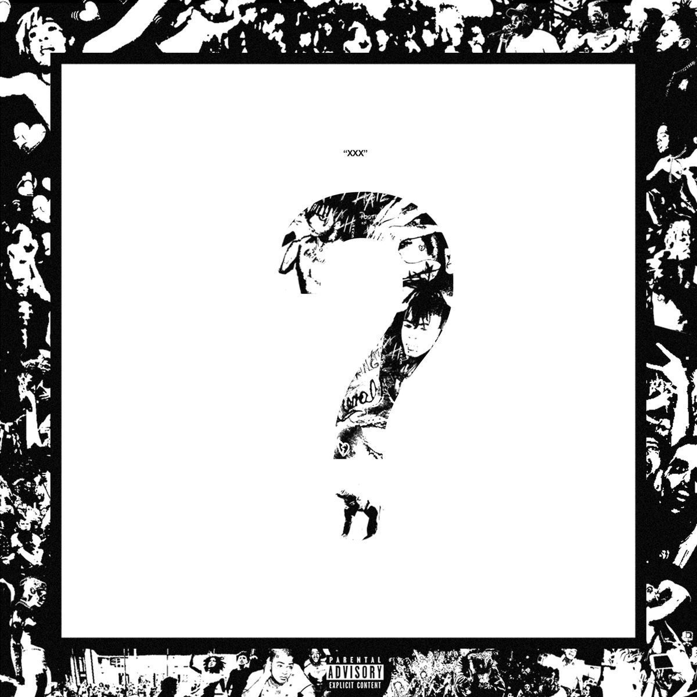
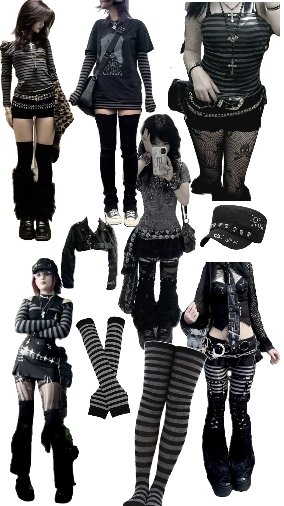
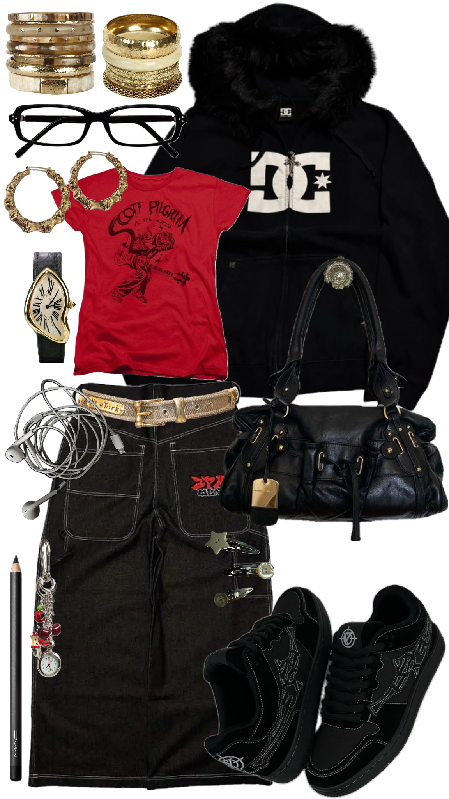
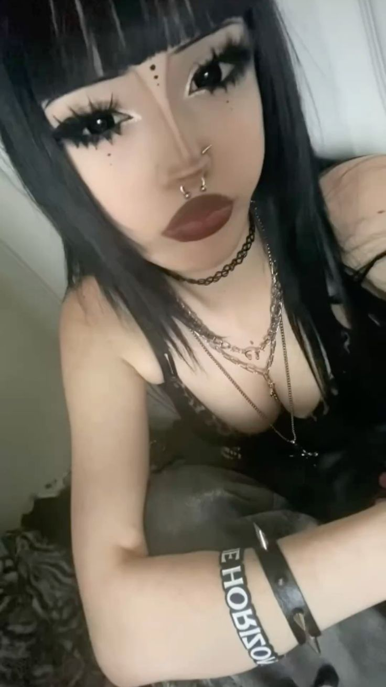

<!DOCTYPE html>
<html lang="el">

<head>
    <meta charset="UTF-8">
    <meta name="viewport" content="width=device-width, initial-scale=1.0">

    <title>i4cbl0od</title>

    <!-- Bootstrap 5.3 CSS -->
    <link href="https://cdn.jsdelivr.net/npm/bootstrap@5.3.8/dist/css/bootstrap.min.css" rel="stylesheet">

    <!-- Custom CSS -->
    <link rel="stylesheet" href="css/style.css">


    <!-- Το περιεχόμενο της ιστοσελίδας θα μπει εδώ -->


    <!-- Bootstrap 5.3 JavaScript -->
<section class="container py-5">

    <h1 class="text-center mb-5">
     I4CBLOOD
    </h1>

    <div class="row align-items-center g-4">

        <!-- Column 1 -->
        <div class="col-md-4 d-flex flex-column gap-3">

            

            

        </div>


        <!-- Column 2 -->
        <div class="col-12 col-md-4">
            <div class="d-flex flex-column gap-3">

                

                

            </div>
        </div>

        <!-- Column 3 -->
        <div class="col-12 col-md-4">
            <ul>
                <li>castles-lil peep,lil tracy</li>
                <li>when the party's over- billie eilish</li>
                <li>witchblades-lil pep, lil tracy</li>
                <li>my own summer-deftones</li>
                <li>be quiet and drive-deftones</li>
                <li>hope-xxtentacion</li>
                <li>moonlght-xxtentacion</li>
            </ul>

        </div>
    </div>

</section>

</body>

</html>


<section class="container-fluid py-5">
    <div class="row g-4">

        <!-- 1st column: Image and title -->
        <div class="col-4 text-center">
            
            <h3 class="mt-3">SOFT GOTH/ALT</h3>
        </div>

        
        <div class="col-4">
            
            <li>
                SOFT GOTH/ALT:Soft goth evolved from 1980s romantic post-punk and 1990s grunge-witch aesthetics into a minimalist, everyday wardrobe popularized on 2010s Tumblr and modern social media. Rather than relying on heavy clubwear, corsetry, or dramatic theatrical makeup, it translates gothic themes—black palettes, lace, velvet, and melancholic romance—into relaxed, wearable daily staples
            </li>
            <li>
                STREETWEAR:Streetwear evolved from a grassroots fusion of late-1970s New York hip-hop and 1980s California surf-skate culture into a dominant global luxury fashion movement. Rather than starting in a design studio, it grew out of youth subcultures repurposing athletic gear, workwear, and limited-edition graphic tees as symbols of community identity and rebellion
            </li>
        </div>

        <!-- 3rd column: Image and title -->
        <div class="col-4 text-center">
            
            <h3 class="mt-3">STREETWEAR</h3>
        </div>

    </div>
</section>

<section class="container-fluid py-5">
    <div class="row g-4 align-items-center">

        <!-- 1st column: Image -->
        <div class="col-6">
        
            
        </div>

               <div class="col-6">

            <ul>
                <li>moisturizer and primer</li>
                <li>eyebrow makeup with eyeshadow and carving with concealer</li>
                <li>foundation</li>
                <li>concealer-undereye,chin,forehead</li>
                <li>harsh nose contour-cold brown eyeshadow</li>
                <li>blush-nose,hiher cheekbones</li>
                <li>setting powder everywhere</li>
                <li>eyeliner-wings and designs on forehead</li>
                <li>false lashes (huge)</li>
                <li>lip liner-cold or warm brown </li>
            </ul>
        </div>

    </div>
</section>